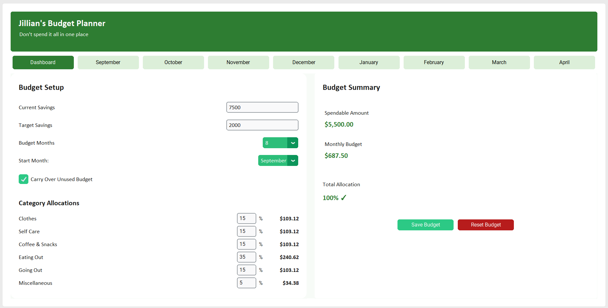
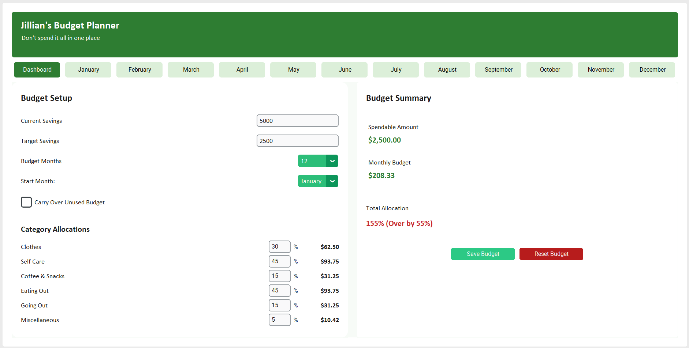
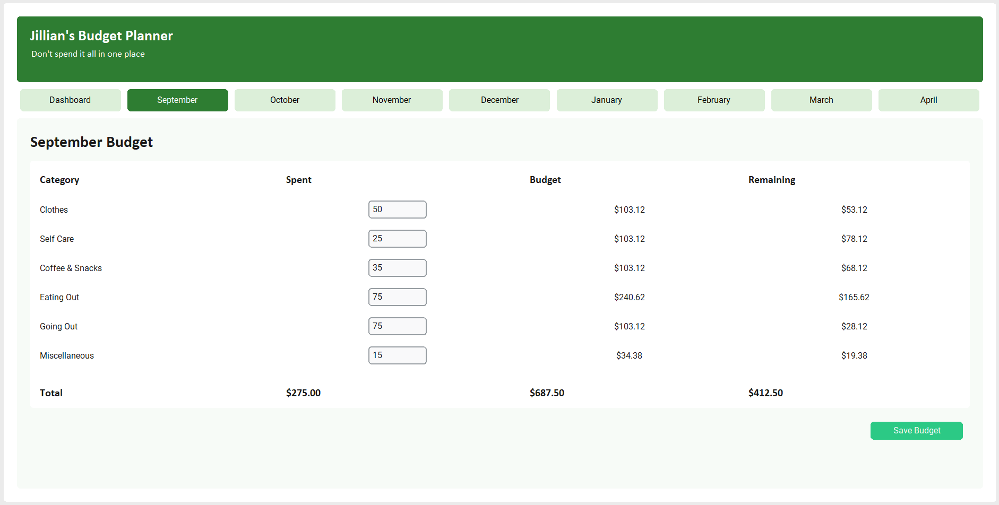

Engineering Calculator Project
University Budget Calculator
A desktop budgeting application I built to help my little sister, a first-year univeristy student, to manage discretionary spending throughout the school year.
The goal was to create something simple enough to use regularly while still providing enough flexibilty to adjust spending allocations as circumstances changed.

Problem Statement
University students often have a fixed amount of discretionary money but limited visibility into how much they can comfortably spend each month.
I wanted to build a tool that could answer questions like:
- How much can I spend each month?
- How much should go toward each category?
- Am I on track with my savings goal?
- What happens to my monthly budget if my available funds or timeline changes?
Objective
Develop a simple, customizable budgeting application that could help a first- year university student manage discretionary spending, maintain a consistent monthly savings target, and understand spending trends throughout the school year.
The key objectives were:
- Establish a monthly spending budget based on available funds and savings goals
- Allocate spending across customizable categories
- Track spending and savings throughout the year
- Provide a clear month-by-month view of financial progress
- Package the application into an easy-to-use standalone program
Development Workflow
1. Define Requirements
Identified the user's financial constraints, spending categories, savings target, and desired timeframe.
2. Design the Budget Model
Developed the underlying calculations for monthly allocations, savings targets, category budgets, and changing timeframes.
3. Build the Interface
Implemented the application in Python using CustomTkinter, including the dashboard, monthly navigation, inputs, and visual summaries.
4. Test & Refine
Tested different budget scenarios and user inputs, resolving issues with ap application state, validation, navigation, and dynamic layouts.
5. Package & Share
Packaged the application with PyInstaller as a standalone Windows .exe, and downloaded it to my sister's laptop with a thumbdrive.
Features


Additional features include:
- Customizable spending categories and budget allocations
- Toggleable carryover of unused funds between months
- Variable timeline settings for flexible budgeting periods
- Dynamic monthly budget calculations based on savings goals
- Month-by-month spending and savings tracking
- Persistent budget data between sessions
- Standalone Windows application packaged as an .exe
Future Development
- Interactive graphs and charts could provide a clearer visual representation of spending and savings trends over time.
- More detailed spending details could help identify changes in spending patters across categories and months
- Customizable budget templates could allow users to quickly create budgets for different finanical situations or academic terms.
- Export functionality could allow users to save budget and spending data for further analysis or record keeping.
Technical Stack
| Tool / Area | Purpose |
|---|---|
| Python | Application logic, budget calculations, and data management |
| CustomTkinter | Graphical user interface and interactive application components |
| JSON | Persistent storage of budget settings,categories, and user data |
| Object-Oriented Programming | Structured application architecture and resuable functionality |
Skills Demonstrated
- Python application development.
- Graphical user interface design.
- Object-oriented programming.
- Data managment and persistence.
- Dynamic calculation and logic implementation.
- User-centered software design.
- Application testing and deployment.